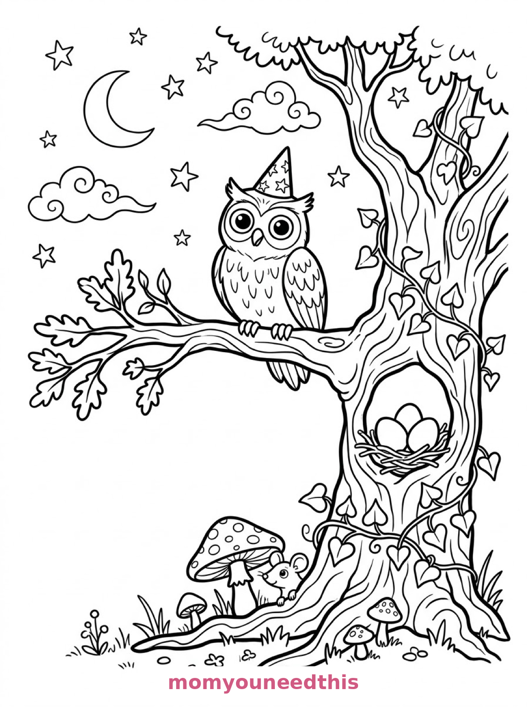
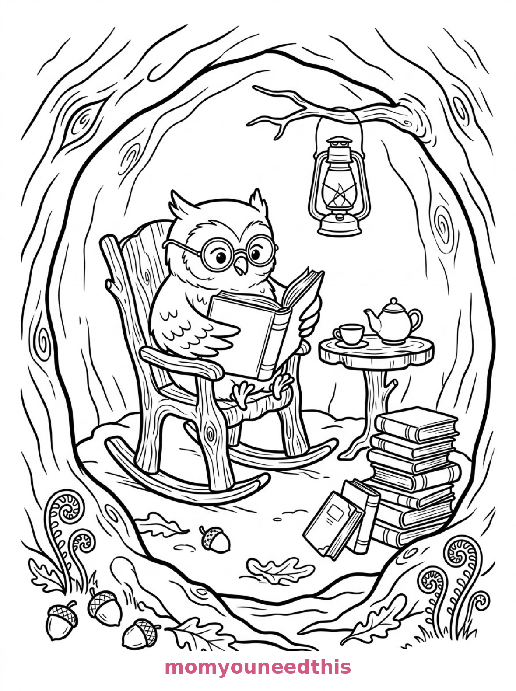
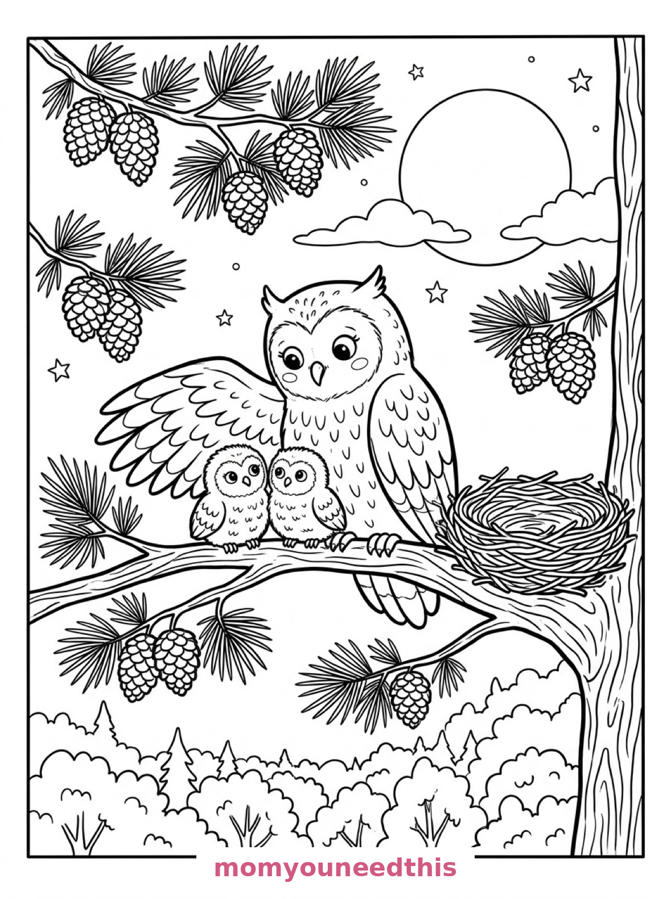

Free Owl Coloring Pages Wizard Hat, Reading Nook & Mother Owl Printables
These free owl coloring pages perch through three nights — an owl in a wizard hat under a crescent moon, an owl reading in its cozy hollow, and a mother owl sheltering two owlets. Download the set below, print at home on letter-size paper, and let the coloring fun begin. No signup needed.
Last updated: October 23, 2026
Quick Answer
Yes — this page has three free printable owl coloring pages: a wide-eyed owl in a tiny wizard hat on an oak branch, an owl with spectacles reading in a rocking chair inside its hollow, and a mother owl with one wing over two owlets on a pine branch. Bold outlines and big spaces, made for little hands. Download, print on letter-size paper, and hand over the crayons — no signup, no cost.
At a Glance
- Ages: 3–8
- Pages: 3 free printables
- Format: Print at home, letter size
- Cost: Free, no signup
- Supplies: Crayons or markers
- Time: 10–20 minutes
🌙 Owl in a Wizard Hat Coloring Page

🎨 Download Your Free Wizard Owl Coloring Page
A wide-eyed owl in a tiny pointed wizard hat perches on a gnarled oak branch at night, with a crescent moon and stars above, a hollow holding three eggs below, ivy on the bark and a small mouse peeking from behind a toadstool — bold outlines, big spaces, zero signup.
⬇️ Download Free Wizard Owl Page 🖨️ Print Wizard Owl Page🎁 Free printable for preschoolers & kids
📚 Owl Reading in the Hollow Coloring Page

🎨 Download Your Free Reading Owl Coloring Page
An owl wearing round spectacles reads an open book in a rocking chair carved from a tree stump inside a cozy hollow, with a teapot and teacup on a table, a leaning pile of books and a lantern hanging from a twig — bold outlines, big spaces, zero signup.
⬇️ Download Free Reading Owl Page 🖨️ Print Reading Owl Page🎁 Free printable for preschoolers & kids
🦉 Mother Owl and Owlets Coloring Page

🎨 Download Your Free Mother Owl Coloring Page
A mother owl spreads one wing protectively over two owlets on a broad pine branch, with pinecones and needle clusters around them, a woven nest in the fork, rolling forest treetops below and a large full moon rising — bold outlines, big spaces, zero signup.
⬇️ Download Free Mother Owl Page 🖨️ Print Mother Owl Page🎁 Free printable for preschoolers & kids
More Coloring Pages
Tap any picture to open its theme page and download the free printable.


🦉 How To Use This Page
- Browse the three designs and pick the owl your child will love most.
- Tap download or print under that design — the file opens full-size, ready for letter-size paper.
- Print a couple of copies of the reading owl — everyone colors that cozy nook differently.
- Color together with crayons or markers, ideally at dusk like a proper owl.
🌙 Why Kids Love Owl Coloring Pages
Owls are the storybook birds: wise, wide-eyed and wide awake when everyone else is asleep. These pages lean into all of it — a wizard hat, a pair of spectacles, a rocking chair inside a tree. Kids don't just color an owl; they color the owl's whole life.
Owl bodies are also wonderfully colorable: a big rounded shape with feather scallops that invite two-tone work — belly one color, wings another, ear tufts a third. Every owl comes out looking deliberate, which is deeply satisfying for a young colorer.
🦉 Meet the Three Owl Scenes on This Page
The wizard owl. A wide-eyed owl perched on a gnarled oak branch at night, wearing a tiny pointed wizard hat, with a crescent moon and scattered stars above, a hollow in the trunk holding three round eggs below the branch, ivy leaves curling around the bark, and a small mouse peeking out from behind a toadstool at the base. It is the most magical page in the set.
The reading owl. An owl wearing round spectacles reads an open book, seated in a rocking chair carved from a tree stump inside a cozy tree hollow, with a teapot and teacup on a small round table beside it, books stacked in a leaning pile, a lantern hanging from a twig overhead, and acorns and curled ferns scattered across the hollow floor. It is the coziest page in the set — bookworms will claim it instantly.
The mother owl. A mother owl with one wing spread protectively over two owlets on a broad pine branch, pinecones and needle clusters hanging around them, a woven nest tucked into the fork of the branch, rolling forest treetops below, and a large full moon rising behind the highest branches. It is the sweetest page in the set — three owls, one wing, one big moon.
✏️ Owl Coloring Tips
- Two-tone the feathers. A light belly and darker wings and back is how real owls read — and the scalloped feathers on these pages are made for it.
- Make the night sky deep. Dark blue or purple around white stars and a pale moon makes the whole page glow.
- Pattern the wizard hat. Stars, stripes or polka dots — the little hat is the detail spot on the first page.
- Warm the hollow. Browns, ambers and a yellow lantern turn the reading page into the coziest corner on the site.
🦉 Coloring Pages for Different Ages
For ages 3 to 4, start with the wizard owl. One big owl shape, a fun hat and a moon are all a little colorer needs to feel the magic.
For ages 5 to 6, the mother owl is the sweet spot. Three owls in different sizes, pinecones and a big moon give clear, satisfying shapes with a story attached.
For ages 7 to 8, hand over the reading nook. The book pile, the teapot, the lantern and the ferns reward careful, detailed coloring — the finished hollow looks like an illustration from a storybook.
📚 More Owl Fun After Coloring
Ask the reading owl's favorite question: what book is it reading? Let your child write (or dictate) the title on the book's cover in the picture — the coloring page gets its own story, chosen by them.
For more night-owl neighbors, visit the animal coloring pages — and the cat coloring pages have a fellow nocturne who also believes the evening is the best time of day.
🔗 More Free Printables You’ll Love
- Free Animal Coloring Pages Free printable animal coloring pages for little learners.
- Free Cat Coloring Pages Another night-loving animal, to print and color.
- Free Mushroom Coloring Pages Mushroom houses and cottages in a gentle storybook style.
- All Free Coloring Pages Browse every free coloring page on the site, organized by theme.
❓ Owl Coloring Pages FAQ
Are these owl coloring pages really free?
Yes — all three designs on this page are free original printables from MomYouNeedThis. Download them, print them at home, and color — no signup and no cost.
What ages are these coloring pages best for?
Kids ages 3 to 8 get the most from this set. The wizard owl is the gentlest start for younger children, while the reading nook and mother owl scenes have the detail older kids enjoy.
How do I print a coloring page?
Tap the download button under the design you want, then print the file on regular letter-size paper. The print button opens the full-size page in a new tab if you prefer to print from there.
Is there a baby owl (owlet) coloring page in this set?
Yes — the third design shows a mother owl with one wing over two owlets on a pine branch, with pinecones, a woven nest and a full moon behind them.
Can I make an owl coloring book from these pages?
Yes — print all three designs, stack them in order, and staple along the left edge. Add a cover sheet with your child's name for a finished homemade owl coloring book.